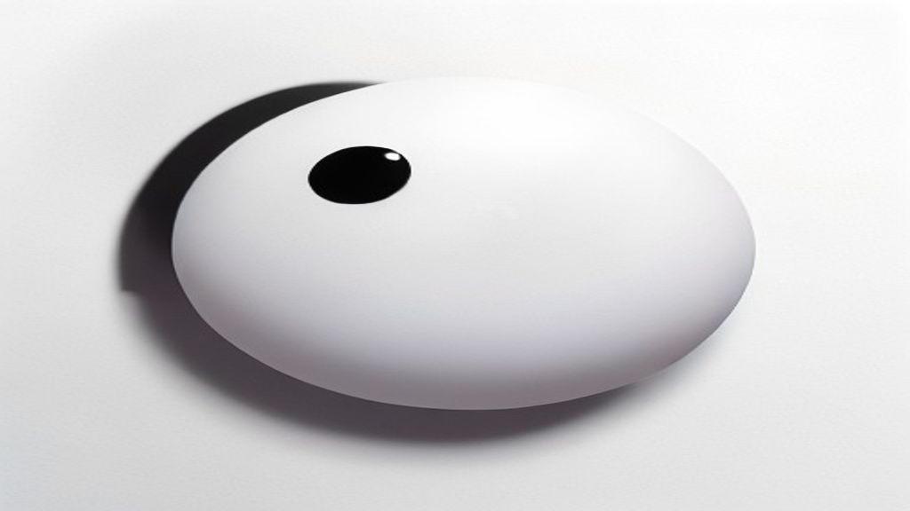
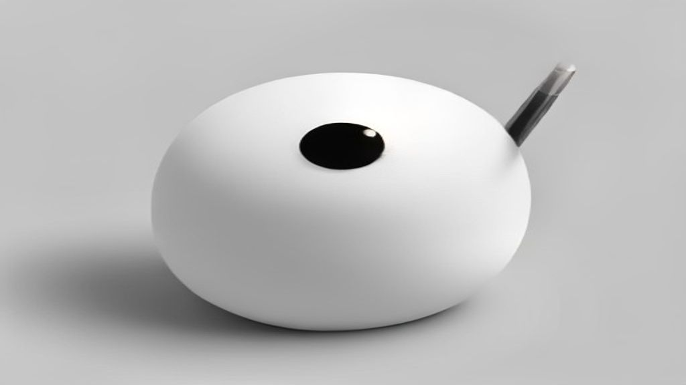
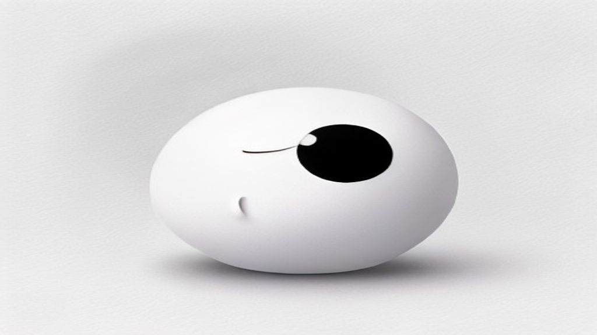

Test images drawn in the "Xiaohei" method (from github.com/helloianneo/ian-xiaohei-illustrations): pure white, thin hand-drawn black lines, one idea per image, a couple of handwritten labels, and a small black blob character doing the actual work in the picture. Labels are English (the original skill is Chinese-tuned — that part is our adaptation). Every image carries a fixed seed so we can regenerate the exact same picture with tweaks.
Generated 3 Sep 2026 · Flux via pollinations.ai (free test route) · 1024×576 (free tier size cap — a proper image API gives full size before anything goes live) · AI-drawn test images — not final art, nothing live
Test 1
The company brain
Core idea: scattered info (email, invoices, jobs) flows into one brain that remembers everything and flags what matters. The character is feeding it, not decorating it.
emailinvoicesjobsone brainit remembers

01-company-brain.jpg
Test 2
You approve, nothing sends alone
Core idea: the approval-first promise — AI drafts, a human stamps it through the gate, and one thing gets held back. This is the positioning picture.
draftsyou approveWAITnothing sends alone

02-approval-gate.jpg
Test 3
Where the hours leak
Core idea: the Time Leak Tracker in one picture — the week is a bucket, admin tasks are the drips, and the character is measuring them. Feeds the tracker + diagnostic story.
your weekinboxchasingcopy-pastebiggest leakmeasure it

03-time-leak.jpg
Test 4
It watches while you sleep
Core idea: the watching/alert layer — a lighthouse sweeping across the tools while the character naps, pinging you only when needed.
always onemailCRMcalendarpings youwhile you sleep
04-night-watch.jpg
Test 5
Plugs into what you already use
Core idea: no rip-and-replace — gmail, excel, CRM already plugged in, the character pushing in the last plug, one cord running to the brain box.